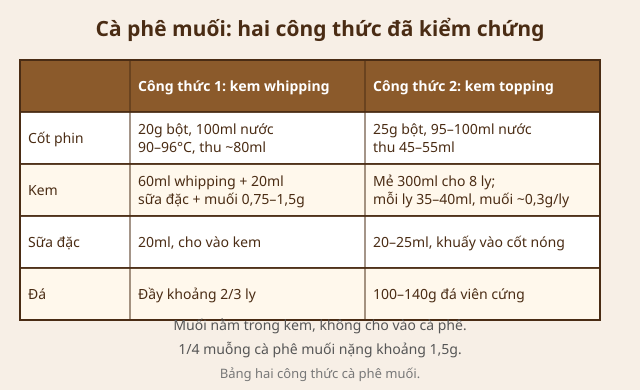

Cà phê muối Huế tại nhà: pha đúng vị mặn nhẹ, béo kem
Tác giả: Ruler
Ngụm đầu tiên của một ly cà phê muối pha đúng sẽ đi qua ba lớp: kem béo mặn thoảng chạm lưỡi trước, rồi mới tới cốt cà phê đậm ở dưới. Nhiều người nghe tên món này thì tưởng ly cà phê sẽ mặn như nước biển, nhưng khi pha đúng, bạn gần như không nhận ra vị mặn riêng — bạn chỉ thấy vị đắng dịu xuống, vị ngọt và vị béo hiện lên rõ hơn. Điểm mấu chốt nằm ở hai chỗ: muối nằm trong kem chứ không cho vào cà phê, và lượng muối chỉ tính bằng phần nhỏ của một muỗng cà phê.
Món này gắn với Huế. Quán được nhắc tới nhiều nhất nằm ở số 10 đường Nguyễn Lương Bằng. Hai mốc năm đang lưu hành là 2010 và 2014: mốc 2010 xuất hiện trong bài của hãng tin CNN, mốc 2014 xuất hiện trong một cuộc phỏng vấn năm 2025 với người sáng lập quán. Chưa có tài liệu nào chốt lại, nên bài này ghi cả hai. Tới tháng 5/2024, các cửa hàng Starbucks tại Việt Nam cũng ra mắt phiên bản của riêng mình.
Bài này hướng dẫn cách pha cà phê muối tại nhà bằng phin, từ việc cân muối cho đúng tới cách đánh kem sao cho lớp kem nằm yên trên mặt ly mà không chìm. Bài dùng hai công thức đã kiểm chứng được từ hai nguồn độc lập, ghi rõ chỗ nào hai nguồn nói khác nhau, và giải thích vì sao lượng muối nhỏ tới vậy mà vẫn đủ làm ly cà phê khác đi.
Trước khi pha: cân muối trước đã
Mọi lỗi của cà phê muối đều bắt đầu từ việc cân muối ẩu, nên việc đầu tiên không phải là pha cà phê mà là chuẩn bị cân. Một phần tư muỗng cà phê muối mịn nặng khoảng 1,5g, tương đương khoảng 580mg natri theo số liệu của Bộ Nông nghiệp Mỹ; một phần tám muỗng nặng khoảng 0,75g, tương đương khoảng 290mg natri. Để so sánh, mức natri khuyến nghị mỗi ngày của FDA là dưới 2.300mg. Cân tiểu ly đọc được 0,1g là dụng cụ đáng mua nhất cho món này. Muối trong ly này không tăng vị mặn từ từ theo từng gam: chỉ cần mẻ sau cho hơn mẻ trước nửa gam, ngụm đầu đã mặn hẳn lên một bậc, và bạn sẽ nhận ra ngay. Vì vậy đừng đong muối bằng thìa — hãy cân.
Nếm kem riêng trước khi rót là bước kiểm tra quan trọng nhất, vì kem trong ca và kem trong ly là hai vị khác nhau. Trong 60ml kem, 1,5g muối chiếm khoảng 2,5% trọng lượng nên nếm riêng sẽ thấy mặn rõ; hòa vào ly khoảng 300ml, tỉ lệ chỉ còn khoảng 0,5% và vị mặn riêng gần như biến mất. Kem nếm riêng thấy mặn vừa thì trong ly sẽ vừa, kem nếm riêng đã mặn gắt thì trong ly cũng mặn — lúc đó sửa đã muộn.
Dùng muối mịn: muối hạt to chưa tan hết sẽ tạo những điểm mặn gắt trong kem, trong khi phần kem còn lại vẫn nhạt. Nếu chỉ có muối hạt to, hãy hòa tan muối vào sữa đặc trước rồi mới trộn vào kem. Loại muối nào — biển, tinh hay ăn — ít quan trọng, vì phần làm việc là ion natri; hạt to hay nhỏ mới quyết định vị mặn có đều hay không.
Hai cách làm kem: đánh riêng từng ly hay đánh một mẻ lớn
Hai nguồn của bài này đưa ra hai cách làm kem khác nhau, vì chúng dùng hai loại kem khác nhau. Bảng dưới đây so sánh hai cách theo các câu hỏi bạn sẽ gặp khi chọn, để bạn quyết trước khi mua nguyên liệu.
| Câu hỏi khi chọn | Cách 1: kem whipping, đánh riêng từng ly | Cách 2: kem topping, đánh một mẻ lớn |
|---|---|---|
| Pha mấy ly một lần | Một ly | Một mẻ khoảng 300ml, chia được 8 ly |
| Nguyên liệu làm kem | 60ml kem whipping lạnh + 20ml sữa đặc + 1/8–1/4 muỗng cà phê muối mịn (0,75–1,5g) | Rich lùn + Rich cao + sữa tươi không đường (mỗi thứ 100ml), muối tinh 2,5g |
| Muối cho mỗi ly | 0,75–1,5g | Khoảng 0,3g (2,5g chia cho 8 ly, mỗi ly 35–40ml kem) |
| Cốt cà phê đi kèm | Phin 20g bột robusta rang đậm, 100ml nước 90–96°C, ủ 20ml, thu khoảng 80ml | Phin 25g bột, 95–100ml nước nóng, thu 45–55ml cốt đậm |
| Sữa đặc | 20ml, cho vào kem | 20–25ml, khuấy vào cốt khi còn nóng |
| Đá | Đá đầy khoảng hai phần ba ly | 100–140g đá viên cứng |
| Hợp với ai | Người mới, pha một ly cho mình | Người đã quen tay, pha nhiều ly cùng lúc |
Hai cách khác nhau vì kem whipping và kem topping pha sẵn có độ béo, độ ngọt và khả năng giữ hình khác nhau, nên lượng muối và lượng kem mỗi ly cũng khác. Bạn đừng lấy lượng muối của cách này gắn sang loại kem của cách kia. Người mới nên bắt đầu từ cách 1 vì nguyên liệu dễ mua ở siêu thị, rồi thử cách 2 khi đã quen tay và muốn pha nhiều ly cùng lúc.

Hình minh họa tự vẽ — không phải ảnh chụp thật.
Đổi nhãn topping là việc cần thử lại từ đầu, vì ba phần trong mẻ kem của cách 2 không thay thế được cho nhau. Sữa tươi không đường bớt ngọt, miệng cũng thấy nhẹ hơn. Một phần topping giữ cho kem đứng được trên mặt ly, phần còn lại giữ cho kem vẫn chảy được khi rót — mất một trong hai thì kem hoặc cứng thành khối, hoặc loãng tới mức chìm ngay. Đổi nhãn là đổi cùng lúc cả ba yếu tố ngọt, béo và độ đứng, nên đừng bê nguyên tỷ lệ cũ sang rồi mặc định mẻ kem mới sẽ sệt như công thức cũ. Đong bằng muỗng cũng là một nguồn lệch: cùng một chiếc muỗng, lần múc đầy vun và lần gạt ngang cho ra hai lượng kem khác nhau, kéo theo muối, béo và giá vốn mỗi ly cũng khác nhau.
Muối làm gì với vị đắng — và chỗ nào nó không làm được
Uống một ngụm cà phê muối pha đúng, bạn sẽ thấy lạ: ly vẫn đậm, vẫn rõ mùi cà phê, nhưng cái gắt ở cuối lưỡi biến mất. Muối không át vị đắng bằng vị mặn — nó làm vị đắng bớt đi mà không cần vị mặn xuất hiện.
Thứ làm việc là natri, không phải phần đi kèm nó. Nhóm Keast, Breslin và Beauchamp thử ba dạng muối natri khác nhau — clorua, axetat, gluconat — và thấy mức dịu đắng gần như giữ nguyên khi đổi dạng, trong khi cảm giác mặn lại yếu dần.
Nhưng natri không dịu đắng đều với mọi chất. Natri clorua cắt tới 76% vị đắng của urê mà chỉ cắt khoảng 4% vị đắng của magie sulfat; caffeine và quinin nằm ở đầu khó giảm nhất. Vị đắng của cà phê rang phần lớn không đến từ caffeine. Thử thêm caffeine gấp khoảng 10 lần ngưỡng nếm được vào cà phê hạt xanh, ly không đắng hơn đáng kể; thêm vào cà phê decaf đã rang, điểm đắng chỉ nhích từ 3,8 lên 4,0. Chất đắng thật sự sinh ra khi rang — caffeoylquinide và phenylindane từ 4-vinylcatechol, gốc là axit chlorogenic. Hạt robusta mang nhiều axit này hơn arabica: khoảng 9,5% khối lượng khô so với 7,0%, đo trên 74 mẫu hạt xanh. Một ly robusta rang đậm vì thế là chỗ muối phát huy rõ nhất.
Giới hạn cần nói thẳng: chưa có nghiên cứu cảm quan nào cho người nếm một ly cà phê đã pha có thêm muối. Kumar và Behrens còn thấy muối ăn chỉ giảm rõ phản ứng của một trong bốn thụ thể đắng, với một hợp chất — nên một phần hiệu quả có thể đến từ xử lý ở não, không chỉ từ lưỡi. Hiệu quả mới chỉ ghi nhận trong các hỗn hợp chất đơn.
Trình tự một ly từ cốt tới lúc uống
Hãy hình dung ly cuối cùng trước khi bắt đầu: từ ngoài thành ly phải thấy ba dải — đá ở dưới, cốt đậm ở giữa, kem nhạt phủ trên. Ba dải đó là thước đo của mọi bước sau.
Bắt đầu bằng kem, không phải bằng cốt. Trong lúc cốt còn chưa pha, kem đã cần thời gian lạnh: để ca đánh, kem và sữa trong ngăn mát cho tới khi tất cả đều lạnh hẳn, rồi mới cho kem lạnh, sữa đặc và muối vào ca sạch và khô. Que đánh phải chìm hẳn trong hỗn hợp rồi mới bật máy ở tốc độ thấp nhất — vài giây đầu chỉ để muối tan. Khi hỗn hợp đã đều, vặn máy lên mức vừa, mắt vẫn để ý độ sệt thay vì để máy chạy một mạch; tắt máy vài lần, nhấc que lên xem kem đã bắt đầu đặc lại chưa. Kem bắt đầu đặc thì giảm tốc độ, chỉ đánh thêm từng chút một.
Kem đã đánh xong, giờ pha cốt. Phin 20–25g bột, khoảng 100ml nước nóng, thu 45–80ml cốt tùy công thức — cách pha trong Bài 01. Nước khởi điểm 92–95°C hợp với hạt rang vừa hoặc rang đậm vừa. Cốt phải đạt ba điểm trước khi đi tiếp: mùi thơm rõ, vị đậm đà, hậu không đắng khô — cốt mỏng sẽ bị kem muối át đi, nên cốt chưa đạt thì đừng tiếc mà pha lại.
Cốt pha xong phải chờ nguội bớt — rót kem lên cốt còn bốc hơi là hỏng ly ngay từ đầu. Hơi nóng làm đá tan rất nhanh, nước loãng chảy vào ly trong vài phút đầu, đồng thời làm lớp kem mềm đi, chảy xuống cốt trước khi kịp phủ đều mặt ly. Rút ngắn thời gian chờ bằng cách ngâm ca cốt vào chậu nước mát chừng một, hai phút, khuấy nhẹ một vòng rồi chạm tay vào thành ca: ca chỉ còn hơi ấm, không còn nóng rát, là rót được; đừng chờ tới khi ca lạnh hẳn, hương sẽ bay mất.
Trước khi ráp, kiểm tra kem bằng hai phép thử nhanh. Nếm một thìa kem riêng: ngọt tới trước, mặn tới sau, mặn chỉ lướt qua. Mặn xộc lên ngay và gắt nghĩa là mẻ kem đã quá tay — đánh lại với ít muối hơn; thêm sữa đặc không chữa được, vì sữa đặc chỉ làm ngọt thêm. Thử độ sệt bằng cách nhấc que đánh lên rồi nghiêng ca: kem rơi thành dòng đặc, chậm, để lại vệt mờ dần trong vài giây; nghiêng ca, kem trượt xuống từ từ — không ào như sữa, không đứng yên như kem trang trí bánh. Độ sánh ngang sữa chua rót được là chuẩn: đủ phủ kín mặt ly mà vẫn tự dàn phẳng khi nghiêng.
Ráp ly theo thứ tự đá, cốt, kem. Khuấy sữa đặc vào cốt còn nóng cho tới khi màu đều hẳn, không còn vệt đọng dưới đáy ca. Bỏ đá viên cứng vào ly trước, rồi rót cốt lên đá. Ly có thể nhạt đi rõ rệt chỉ sau năm phút chỉ vì đá: viên vụn, viên rỗng hay viên để ngoài lâu tan nhanh hơn viên đặc rất nhiều — cùng một ca cốt 50ml, đá tan nhanh làm ly loãng đi, đá đặc giữ ly nguyên vị lâu hơn. Lấy khoảng 35–40ml kem cho cách 2, hoặc dùng hết phần kem đã đánh cho cách 1, rồi đổ từ từ lên mặt ly qua lưng thìa ngửa ra — kem sẽ trải đều mà không xô xuống cốt. Kem đạt là kem phủ kín mặt ly mà không chìm xuống: rót xong, lớp kem nằm yên trên mặt, nghiêng ly thì nó trôi theo cà phê, không vỡ ra, không cứng lại thành khối. Rắc một lớp cacao thật mỏng lên mặt là đủ; nhiều hơn sẽ khô miệng, át mùi cà phê và nặng ngụm đầu.
Uống ngay sau khi ráp xong, khi lớp kem còn mịn, cốt còn đậm và hậu mặn nhẹ vẫn rõ. Ngụm đầu nhấp nhỏ qua lớp kem: vị béo mặn nhẹ chạm lưỡi trước, rồi cốt đậm đi qua phía dưới và để lại hậu vị. Đừng khuấy tan hết ngay từ ngụm đầu — kem hòa hết vào cốt thì ly chỉ còn là cà phê sữa béo, mất hẳn cảm giác ba lớp. Uống vài ngụm rồi khuấy nhẹ một hai vòng: một phần kem xuống cốt cho ngụm sau dịu lại, phần kem còn lại vẫn phủ trên mặt. Ngụm đầu toàn kem nghĩa là kem quá dày; kem tan biến ngay, chỉ còn vị đắng, nghĩa là kem quá loãng hoặc cốt lúc rót còn nóng.
Ở Huế, người ta thường khuấy đều trước khi uống: ly chuyển thành màu caramel nhạt đồng đều, muối lan ra khắp ly. Không khuấy thì bạn uống lớp kem trước rồi mới tới cà phê bên dưới — gần như hai món trong một ly, từ cùng nguyên liệu. Quán gốc còn rắc thêm một chút bột quế lên mặt kem trước khi phục vụ.
Ngoài bản đá còn có bản nóng: bỏ hẳn đá, bớt sữa đặc một chút nếu ly đang ngọt, chỉ rót kem khi chuẩn bị mang ra bàn. Cốt nóng làm kem mềm nhanh, nên kem cho bản nóng cần sệt vừa phải — đủ đặc để không tan ngay, nhưng không đánh cứng tới mức không rót được. Bản nóng không chờ được: càng để lâu, kem càng chảy xuống cốt, hai lớp hòa thành một và vị béo nặng dần, nên thường khuấy đều rồi uống ngay, trong khi bản đá mới giữ được ba lớp nhìn rõ.
Ly hỏng thì sửa ở đâu
Muốn sửa nhanh một ly muối chưa vừa miệng, hãy xem bạn phát hiện lỗi vào lúc nào: lúc đánh kem, lúc nếm kem, lúc rót, lúc uống ngụm đầu, hay sau khi để một lúc. Bảng dưới đây xếp lỗi theo đúng thứ tự phát hiện đó.
| Nhóm lỗi | Dấu hiệu | Vì sao hay gặp | Sửa ra sao |
|---|---|---|---|
| Kem đặc quá | Kem đứng chóp, múc lên không chảy | Đánh quá lâu, vượt qua độ sánh cần thiết | Trộn thêm sữa lạnh từng ít một, khoảng 5–10ml mỗi lần; đổ nhiều một lúc, mẻ kem loãng hẳn ra và khó lấy lại độ sệt |
| Vị quá mặn | Mặn bật ngay đầu lưỡi, nuốt xong hậu mặn còn kéo dài | Muối nhiều quá, hoặc đổi sang loại muối cho cảm giác mặn mạnh hơn | Chữa trong ly không được: sữa đặc thêm vào chỉ làm ly ngọt hơn, vị mặn vẫn ở đó. Mẻ sau bớt từng 0,2–0,3g muối |
| Kem lỏng | Kem chảy như sữa, vừa rót đã chìm | Ca và nguyên liệu chưa đủ lạnh, sữa nhiều, đánh chưa tới, hoặc cốt còn nóng | Làm lạnh ca và nguyên liệu rồi đánh thêm từng khoảng ngắn; chờ cốt ấm vừa tay rồi mới rót kem qua lưng thìa |
| Kem chìm vào cốt | Lớp kem biến mất chỉ sau vài giây | Kem loãng, cốt nóng, hoặc rót quá mạnh tay | Kiểm tra kết cấu kem trước khi rót, để cốt nguội bớt với bản đá, rót qua lưng thìa cho dòng chảy nhẹ. Đổ thêm kem dày không sửa được lỗi gốc — chỉ tốn nguyên liệu và làm ly nhanh ngấy |
| Vị quá ngọt | Ngọt bám lâu sau khi nuốt, kem nặng, gần như không còn mùi cà phê | Sữa đặc nhiều quá, hoặc bản thân kem đã ngọt sẵn | Giảm sữa đặc từng 5ml ở mẻ sau; kem vẫn ngọt mạnh thì xem lại loại topping và tỉ lệ của cả mẻ |
| Vị chỉ còn kem | Uống vào chỉ thấy kem sữa thoảng mùi cà phê | Cốt nhạt, hoặc kem dày quá so với cốt | Nếm cốt riêng trước khi ráp: cốt chưa đạt thì chỉnh độ xay hoặc đổi loại hạt; bớt kem tới mức ly mất kết cấu không phải cách sửa |
| Cốt có mùi khét | Mùi khói cháy rõ trong ly | Hạt rang rất đậm, bột xay quá mịn, hoặc phin nhỏ giọt quá chậm | Ngửi bột khô trước khi pha: mùi khói cháy đã rõ thì đổi hạt khác hoặc xem lại mức rang. Kem chỉ che được ngụm đầu, không sửa được nền hương |
| Kem tách nước | Bề mặt lợn cợn, nước tách riêng khỏi kem | Nguyên liệu không cùng nhiệt độ, đánh quá lâu, hoặc cất giữ sai cách | Tách nhẹ thì khuấy lại, dùng được nếu nguyên liệu vẫn tốt; đã có mùi lạ hay vị chua thì bỏ hẳn |
Chọn hạt: robusta làm trụ, arabica làm hương
Chọn hạt cho cà phê muối có một nguyên tắc duy nhất: cốt phải đủ đậm để không bị kem át. Hạt nhẹ mà pha loãng thì ly chỉ còn vị kem — lúc đó chỉ còn cách pha lại cốt cho đậm lên.
Arabica hoàn toàn là trường hợp cần lưu ý nhất: hạt thơm và thanh, nhưng cốt nhẹ, dễ bị sữa đặc và kem lấn mất. Dùng arabica thì phải pha đủ đậm, đậm hơn mức vẫn pha để uống đen. Một hiểu lầm hay đi kèm arabica là con số "hơn 60% chất béo": đo thực tế, lipid trong hạt arabica xanh chỉ khoảng 15–17% khối lượng khô. Con số này tuy cao hơn robusta, nhưng không đủ để tạo cảm giác béo ngậy cho ly — cảm giác béo đến từ lớp kem và sữa, không đến từ hạt.
Nếu chỉ được chọn một loại hạt, hãy chọn robusta: vị đậm và thân vị dày không chìm sau lớp kem béo, lại thường mang hương cacao hay hạt rang — đúng nhóm hương ăn ý với kem sữa. Gu mạnh thì pha robusta nguyên chất, chỉ cần tránh hạt rang tới mức cháy, vì mùi khói gặp kem béo sẽ càng lộ.
Pha trộn hai loại cũng là cách hay: robusta làm nền cho thân vị và hậu đắng, arabica thêm hương thơm và hậu vị mềm — cốt vừa đủ dày để đứng sau lớp kem mà không nặng. Hạt culi cũng có thể pha vào blend để tăng thân vị, nhưng tỉ lệ quá cao hoặc rang quá đậm làm hậu vị nặng, đắng dai.
Về mức rang: rang vừa giữ được hương tự nhiên, hậu vị sạch; rang đậm vừa cho cảm giác mạnh hơn, hợp với hương cacao và hạt rang vốn ăn ý với kem sữa. Hạt rang rất đậm, bề mặt bóng dầu mạnh, thường mang mùi khói, và mùi ôi cũng xuất hiện nếu bảo quản không tốt.
Kết luận
Cà phê muối ngon không nằm ở việc cho nhiều muối, mà nằm ở việc cân muối đủ thấp để vị đắng dịu xuống mà không tạo ra vị mặn riêng. Một ly chuẩn chỉ cần 20–25g bột phin, 20–25ml sữa đặc, 35–40ml kem muối và một lượng muối rất nhỏ — khoảng 0,3g muối cho mỗi ly nếu pha theo cách mẻ kem lớn (cách 2), hoặc từ 0,75g tới tối đa 1,5g cho một ly nếu pha theo cách kem whipping riêng từng ly (cách 1). Kem phải đánh tới độ sánh như sữa chua rót được, cốt phải để nguội bớt trước khi rót kem, và ly nên uống ngay sau khi hoàn thiện. Bạn hãy bắt đầu từ cách kem whipping với 1/8 muỗng cà phê muối, nếm kem riêng trước khi rót, rồi tăng dần từng chút ở mẻ sau cho tới khi tìm ra lượng muối hợp với khẩu vị của mình. Khi đã quen, bạn sẽ thấy đây chỉ là ly cà phê phin quen thuộc thêm một lớp kem mặn nhẹ lên trên.
Nguồn tham khảo
- vietnameseiced.coffee, "Cà Phê Muối: Vietnamese Salt Coffee from Huế" — 20g robusta rang đậm, 100ml nước 90–96°C, ủ 20ml, thu khoảng 80ml cà phê; kem 60ml whipping lạnh + 20ml sữa đặc + 1/8–1/4 muỗng cà phê muối mịn (0,75–1,5g); quán gốc ở 10 Nguyễn Lương Bằng, Huế, CNN ghi mở năm 2010, phỏng vấn năm 2025 ghi 2014; Starbucks Việt Nam ra mắt cà phê muối tháng 5/2024; 1/4 muỗng cà phê muối trong 60ml kem khoảng 2,5% theo trọng lượng (truy cập 24/11/2026): https://www.vietnameseiced.coffee/recipes/salt-coffee/
- Lyon Coffee, "Cách làm cà phê muối tại nhà: Kem mịn, béo vừa, không quá mặn" — ly: 45–55ml cốt, 20–25ml sữa đặc, 35–40ml kem muối, 100–140g đá; mẻ kem 100ml Rich lùn + 100ml Rich cao + 100ml sữa tươi không đường + 2,5g muối tinh; phin 25g, 95–100ml nước, thu 45–55ml cốt, nước 92–95°C; quán Cà Phê Muối của Trần Nguyễn Hữu Phong và Hồ Thị Thanh Hương bắt đầu hoạt động khoảng năm 2014; lipid hạt arabica xanh khoảng 15–17% khối lượng khô (truy cập 24/11/2026): https://lyoncoffee.com.vn/cach-lam-ca-phe-muoi-ngon-tai-nha/